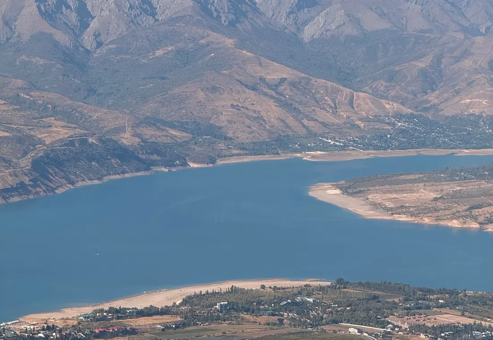
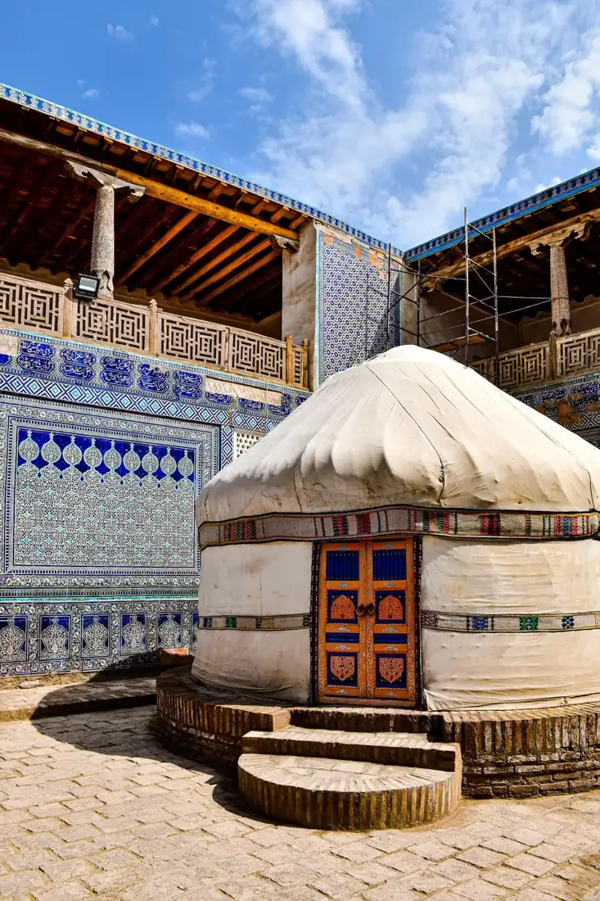

Bästa pris1 dag
01
Bästa pris1 dag
01Stadstur i Tasjkent
TasjkentEn dag i huvudstaden: Hazrati Imam, Chorsu-basaren, tunnelbanan och Amir Timur-torget
från…per person
Se resan→
Privata resor och resor i små grupper genom Uzbekistan — turkosa kupoler i Samarkand, Buchara och Chiva, jurtläger i öknen, bergssjöar och varm gästfrihet. Vi ordnar allt, du bara reser.
Läs mer om UzbekistanBörja kort eller res hela vägen — varje resa har licensierad guide, transport och vår support dygnet runt.
Perfekt för ett första möte med Uzbekistan — från en dag i Tasjkent till fyra dagar med Samarkand, Buchara eller bergen.
Bästa pris1 dag
01En dag i huvudstaden: Hazrati Imam, Chorsu-basaren, tunnelbanan och Amir Timur-torget
 Bästa pris3 dagar
02
Bästa pris3 dagar
02Huvudstaden och Registan på tre dagar med snabbtåget Afrosiyob
 Bästa pris4 dagar
03
Bästa pris4 dagar
03Sidenvägens tre stora städer på fyra dagar med snabbtåg

Bästa pris4 dagar 04Tjimgan, Amirsoy och Tjarvaksjön plus Registan — fyra dagar
Våra mest älskade program: hela Sidenvägen, hotell av hög klass och varje detalj ordnad.
 Signatur8 dagar
01
Signatur8 dagar
01Chiva, Buchara, Samarkand och Tasjkent — start i Chiva varje lördag
 Signatur5 dagar
02
Signatur5 dagar
02Sidenvägens två juveler på fem dagar
 Signatur10 dagar
03
Signatur10 dagar
03Från Chiva till Samarkand med en natt i ökenjurta
 Signatur7 dagar
04
Signatur7 dagar
04Pilgrimsfärd till stora imamer och sufimästare
Hittar du inte din resa? Vi skräddarsyr rutter för par, familjer och grupper.
Korta filmer om städer, kultur och natur — se dem innan resan.
Videor från Uzbekistans turistkommittés officiella kanal och internationella medier (Euronews, BBC, Insider, Eater) · Se på YouTube →
Fasta datum för ensamresenärer och par — välj grupp med engelsk- eller rysktalande guide, allt är ordnat.
Vilket guidespråk passar dig?
Boka en enskild tjänst — guide, transport, hotell, flygplatsmottagning eller eSIM — utan att köpa en hel resa.
 Licensierade guiderProfessionella lokala guider för stadsturer, museer och hela resor.→
Licensierade guiderProfessionella lokala guider för stadsturer, museer och hela resor.→ Transport med chaufförPrivat bil, minivan eller buss med chaufför — transfer mellan städer, stadsturer och dagsutflykter.→
Transport med chaufförPrivat bil, minivan eller buss med chaufför — transfer mellan städer, stadsturer och dagsutflykter.→ HotellbokningVi hittar och bokar hotell efter din budget – från gästhus till 5 stjärnor.→
HotellbokningVi hittar och bokar hotell efter din budget – från gästhus till 5 stjärnor.→ Flygplatshämtning med chaufförEn chaufför med namnskylt möter dig i ankomsthallen och kör dig till hotellet.→
Flygplatshämtning med chaufförEn chaufför med namnskylt möter dig i ankomsthallen och kör dig till hotellet.→ Mottagning på flygplatsen av guideDin guide möter dig på flygplatsen, hjälper med SIM-kort och växling och följer med till hotellet.→
Mottagning på flygplatsen av guideDin guide möter dig på flygplatsen, hjälper med SIM-kort och växling och följer med till hotellet.→ Grupper, evenemang & MICEFöretagsresor, incentiveresor, konferenser och stora gruppevenemang.→
Grupper, evenemang & MICEFöretagsresor, incentiveresor, konferenser och stora gruppevenemang.→ eSIM för UzbekistanMobilt internet direkt efter landning — ingen butik, ingen passkö.→
eSIM för UzbekistanMobilt internet direkt efter landning — ingen butik, ingen passkö.→Utvalda lokala experter. Riktiga omdömen; bokning och betalning tryggt via Moviy Nomad.
Välj platser, nätter, hotell, transport och guide — se rutten på kartan och ett direkt prisförslag.
Börja bygga →


Vårt team bor i Uzbekistan och känner varje gata, guide och dold pärla.
Hotell, tåg, transfer, guider och entréer — i ett tydligt paket.
Halalmat, tid för bön och ett bekvämt tempo för familjer.
Engelsk- och rysktalande guider; andra språk på förfrågan.
Inga dolda avgifter — du ser exakt vad som ingår innan du bokar.
En riktig person på WhatsApp eller Telegram under hela resan.
På 2,5 år har Moviy Travels team ordnat resor för mer än 10 000 resenärer. Moviy Nomad är samma team, guider och chaufförer för gäster från hela världen — en licensierad researrangör (DMC) för Uzbekistan: Chiva, Buchara, Samarkand, Tasjkent och mer.
✓Licensierad researrangör — Turistkommittén i Republiken Uzbekistan, licens nr 887333
Se våra resor på Instagram: @moviy_travel58 000 följare · 600+ inlägg med riktiga resor→Riktiga meddelanden från våra resenärers gruppchatt, översatta från uzbekiska.
Tack för allt ert arbete och er omtanke. Jag har bestämt mig för att resa en gång om året – med er, tillsammans med vänner och familj.
Utmärkt service: vår chaufför Nodirbek behandlade alla som familj, och den långa vägen kändes inte alls lång. Funderar du fortfarande – åk, du kommer inte att ångra dig.
Det blev ännu bättre än vi väntat oss. Att samla 500 personer är ingen småsak. Ordna gärna fler sådana resor!
Den senaste veckan var verkligen oförglömlig – kanske för att det var min första resa. Jag kom hem med fina intryck och minnen av underbara människor.
Bilder och intryck som våra resenärer har delat. Har du rest med oss? Lägg till din!
Inga berättelser än – bli först med att dela.
Medborgare i många länder kan besöka Uzbekistan utan visum eller med ett enkelt e-visum. Berätta vilket land ditt pass är från så kontrollerar vi gällande regler.
Vår (april–juni) och höst (september–oktober) är bäst för Samarkand, Buchara och Chiva. Sommaren passar bergen, Tjarvaksjön och Ferganadalen; vintern är lugn och billig.
Ja. Vi planerar privata resor för par och familjer samt gruppresor och program för resebyråer.
Det mesta av maten i regionen är halal. Vi kan också planera programmet efter bönetider och besök på heliga platser.
Skriv till oss på WhatsApp eller Telegram. När du godkänt programmet bekräftar vi bokningen och skickar betalningsuppgifter.
Ja. Vi erbjuder mottagningstjänster och partnerpriser för byråer och grupper.
Välj det sätt som passar dig bäst — vi svarar med idéer, program och pris.
+998 97 542 77 99 · Maftuna Artikova